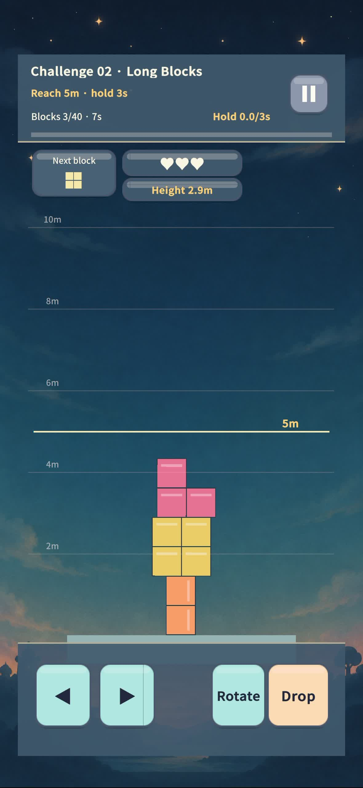

Tower of God - 신의탑
쌓고, 흔들리고, 다시 도전! · Stack, wobble, try again!
NOW AVAILABLE · iPhone / iPad
어디까지 쌓을 수 있나요?
How high can you stack?
움직이고, 돌리고, 균형을 잡으세요.
흔들리는 블록 탑에서 나만의 기록에 도전하세요.
Free download · 無料ダウンロード · 免费下载 · 免費下載
18 challenges · 54 stars · 4 game modes
선택형 보상 광고 포함 / Optional rewarded ads

물리 탑쌓기
내려오는 블록을 좌우로 움직이고 회전해 최대한 높은 탑을 만드세요. 도전 여행의 18개 과제를 해결하고 별 54개와 블록 색상 테마 3종을 모으세요. 끝없이 쌓기, 90초 도전, 오늘의 탑도 즐길 수 있습니다. 실패 후 보상형 광고를 끝까지 보면 한 판에 한 번 이어할 수 있습니다. 광고 없이도 게임을 플레이할 수 있습니다.
언어와 기록
설정 화면에서 한국어, 영어, 일본어, 중국어 간체·번체를 선택하세요. 자동은 기기 언어를 따릅니다. 최고 기록과 언어 설정은 기기에 저장됩니다. 앱을 삭제하면 기록이 지워질 수 있으며 기기 백업 설정의 영향을 받습니다.
문의
문제 발생 시 기기 모델, OS 버전, 게임 버전, 재현 방법과 함께 snowman95tube@gmail.com으로 연락해주세요. 비밀번호나 결제 정보를 보내지 마세요.
Build a physical tower
Move and rotate falling blocks to stack a taller tower. Solve 18 Challenge Journey objectives, collect 54 stars and unlock three block color themes. Also play Endless Tower, the 90-Second Challenge or Daily Tower. After a run ends, watching a complete rewarded ad lets you continue once per run. Watching ads is optional.
Languages and records
Choose Korean, English, Japanese, Simplified Chinese or Traditional Chinese in Settings. Auto follows your device language. Best heights and language preferences are stored on your device. Uninstalling may erase them; device backups may retain a copy.
Support
Email snowman95tube@gmail.com with your device model, OS and game version, and steps to reproduce the problem. Do not include passwords or payment details.
物理タワーに挑戦
落ちてくるブロックを左右に動かしたり回転させたりして、高いタワーを作りましょう。チャレンジの旅の18の課題で54個の星と3種類のカラーテーマを集めよう。エンドレス、90秒チャレンジ、今日の塔も楽しめます。ゲーム終了後、リワード広告を最後まで見ると、1プレイにつき1回続けられます。広告視聴は任意です。
設定画面で言語を変更できます。記録は端末に保存されます。お問い合わせは snowman95tube@gmail.com まで、端末・OS・ゲームのバージョンと再現手順をお知らせください。
挑战物理高塔
左右移动并旋转下落的方块，尽量堆出更高的塔。完成挑战之旅的18个目标，收集54颗星，解锁3种配色主题。还有无尽高塔、90秒挑战和今日高塔。游戏结束后，看完奖励广告可续玩一次，每局限一次。观看广告是可选的。
可在设置中切换语言。纪录保存在设备上。如需帮助，请将设备型号、系统和游戏版本及复现步骤发送至 snowman95tube@gmail.com。
挑戰物理高塔
左右移動並旋轉下落的方塊，盡量堆出更高的塔。完成挑戰之旅的18個目標，收集54顆星，解鎖3種配色主題。還有無盡高塔、90秒挑戰和今日高塔。遊戲結束後，看完獎勵廣告可續玩一次，每局限一次。觀看廣告是可選的。
可在設定中切換語言。紀錄保存在裝置上。如需協助，請將裝置型號、系統和遊戲版本及重現步驟寄至 snowman95tube@gmail.com。